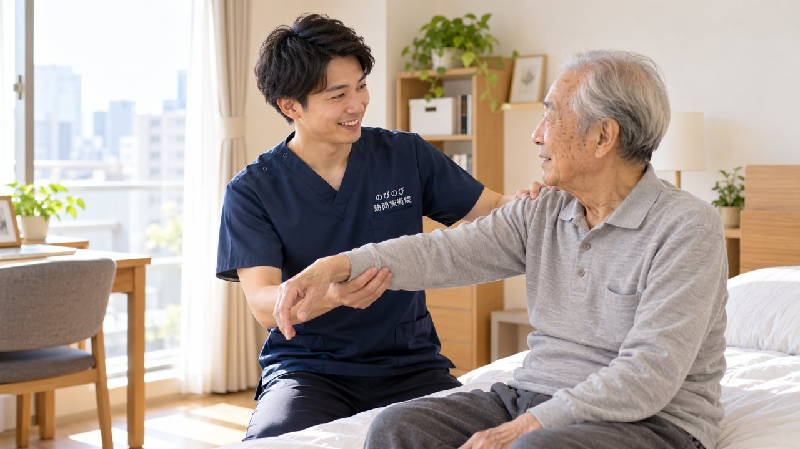

腕が上がらない、後ろに手が回らない、夜になるとうずいて眠りが浅い。摂津市で五十肩や肩の痛みをかかえ、着替えや洗髪までつらくなってきたご本人・ご家族へ向けた記事です。痛みの原因を見きわめるのは整形外科などの医師の役目で、鍼灸はあくまでその補助という位置づけになります。そのうえで、こわばった肩まわりを和らげ、動かせる範囲を保つお手伝いを、自宅にうかがってできることをお伝えします。
かいつまんで言うと、肩の痛みは原因も経過もさまざまで、治療の中心は医療機関です。転倒後の強い痛みや腕に力が入らない、急な腫れや発熱があるときは、まず整形外科を受診してください。急を要するサインがないことを確かめたうえで、訪問鍼灸マッサージは肩・肩甲骨・首まわりのこわばりを和らげ、血のめぐりを促し、動ける範囲を保つ機能訓練を組み合わせます。これらについて別途の料金はいただきません。医師が鍼灸を必要と認め通院がむずかしければ保険の対象になり、自己負担は1割で1回およそ395円が目安です。効果には個人差があります。
摂津市で、五十肩の肩の痛みを抱えている方へ
ある朝ふと棚の上のものを取ろうとして、肩が途中でつかえて腕が上がらない。着替えのときに袖へ手を通すだけで奥のほうがズキッとする。五十肩は、そんな何気ない動作のなかで少しずつ気づかされる不調です。のびのび訪問施術院は、摂津市の千里丘や鳥飼、味舌、別府といった地域へうかがい、ご自宅でいちばん楽な姿勢のまま施術を受けていただく訪問鍼灸マッサージです。JR千里丘や阪急正雀、大阪モノレールの摂津・南摂津のあたりまで、日々おうかがいしています。
五十肩は正しくは肩関節周囲炎と呼ばれ、肩の関節を包む組織に炎症が起きて動きが制限される状態です。腕が横や後ろに回らない、髪を結ぶ・洗髪の動作がつらい、といった訴えが多く、放っておくと肩が固まって動かせる範囲がさらに狭くなっていくこともあります。摂津市内でこうした肩の悩みを抱えたまま、通院がむずかしい方のところへ、道具を持ってこちらから向かいます。
夜、肩が痛んで眠れない、その一日の重さ
五十肩でとりわけこたえるのが夜間痛です。日中はだましだまし動かせても、横になると痛む側の肩が下になったり、寝返りの拍子にズキンと走ったりして、なかなか眠りにつけない。眠れないまま朝を迎えると、肩そのものよりも、疲れが抜けない体と沈みがちな気持ちのほうがこたえてくる、という声をよく耳にします。摂津の住宅地の静かな夜だからこそ、痛みで目が覚めるつらさは一段と身にしみるものです。
肩を後ろに回す動作は、エプロンの紐を結ぶ、ズボンの後ろポケットに手を伸ばす、背中のファスナーを上げるといった暮らしのあちこちに潜んでいます。そのひとつひとつがままならなくなると、生活の張りまで少しずつ削られていきます。まずは、そのつらさをやわらげて、眠れる夜と動かせる肩を少しでも取り戻していくお手伝いをしたいと思っています。肩の痛みで腕が上がらない状態については五十肩・肩の痛みで腕が上がらない方へのページでも詳しくお伝えしています。
五十肩の時期に合わせて、無理なく進めます
五十肩には、大きく分けて経過の段階があります。炎症が強く痛みが目立つ急性期、痛みは落ち着いてきたものの肩が固まって動きが狭くなる拘縮期、そして少しずつ動く範囲が戻っていく回復期です。急性期に無理やり動かすと炎症を刺激してかえって長引くことがあるため、この時期は痛みをやわらげ、肩を休ませることを大切にします。段階を見きわめずに一律に動かす、ということはいたしません。
痛みが落ち着いてきたら、固まった肩の動く範囲を保ち、少しずつ広げていくための機能訓練を、体の様子を見ながら加えていきます。こうした機能訓練は鍼灸に加えて行います。これらについて別途の料金はいただきません。鍼灸やマッサージは病気そのものを治すものではありませんが、痛みや動きにくさをやわらげ、日々の動作を支える助けとして活用いただけます。効き方には個人差がありますので、その日の肩の状態を確かめながら進めていきます。
先に整形外科の受診をおすすめする場合
肩の痛みといっても、原因は五十肩ばかりではありません。転んで肩を強くぶつけた、腕が全く上がらず力も入らない、しびれをともなう、急に赤く腫れて熱を持っている、こうしたときは、腱板の損傷や別の疾患が隠れていることもあるため、まず整形外科で診てもらうことをおすすめします。訪問鍼灸マッサージは、そうした医療機関での診断や治療と対立するものではなく、並んで生活を支えていく役割だと考えています。
はり・きゅうの医療保険（療養費）の対象となるのは、神経痛・リウマチ・頸肩腕症候群・五十肩・腰痛症・頸椎捻挫後遺症の6疾病で、五十肩はこのなかに含まれています。ご利用には医師の同意書が必要で、要介護認定は不要です。介護保険の区分支給限度額とは別枠のため、介護保険のサービスと併用いただけます。ただし、同じ部位について医療保険のリハビリと鍼灸を同じ月に同時に算定することはできません。
費用のことと、摂津市の対応エリア
費用の目安は、施術1回の総額が3,950円で、医療保険の自己負担は1割の方で約395円です。たとえば週2回のペースで受けられる場合、1割負担の方なら1か月あたり約3,160円が目安になります。エリア内であれば出張費はかからず、料金は一律です。仕組みや負担額の詳しい内訳は料金はいくら？医療保険の自己負担額と仕組みにまとめています。
対応エリアは、千里丘・鳥飼・味舌・別府をはじめ摂津市の各地域におうかがいしています。ご自宅がエリアに入るかどうか気になる方は対応エリアはどこまで来てもらえる？を、摂津市での訪問施術の流れ全般は摂津市の訪問鍼灸マッサージをご覧ください。肩が上がらない、夜に痛んで眠れない、そんな毎日が続いているなら、どうか一人で抱え込まず、まずは気軽にご相談いただければと思います。
よくある質問
摂津市のどのあたりまで来てもらえますか？
千里丘・正雀・香露園から、鳥飼・味舌・別府の周辺まで、摂津市内を広くうかがっています。市境にお住まいの方も、一度ご相談ください。
五十肩でも保険で受けられますか？
肩の慢性的な痛みについて医師が鍼灸を必要と認め、通院がむずかしい状態であれば、はり・きゅうの医療保険の対象になります。まずは整形外科などで診てもらい、状態を確かめてください。
腕が上がらないのですが、無理に動かされませんか？
無理に動かすことはありません。痛みの時期に合わせて、こわばりを和らげることを中心に、動かせる範囲でやさしく進めます。急性期は動きを広げようとせず、まず痛みをやわらげることを優先します。
どんなときは先に病院へ行くべきですか？
転倒後に急に肩が動かせない、腕に力が入らない、急な腫れや発熱がある、じっとしていても激しく痛むといったときは、まず整形外科を受診してください。鍼灸は、そうした急を要するサインがないことを確かめたうえで行う補助です。
鍼灸で五十肩は治りますか？
鍼灸は治療の中心ではなく、あくまで補助です。こわばりを和らげ、動ける範囲を保つお手伝いはできますが、治すものではありません。効果の出方には個人差があり、治療の中心は医療機関だとお考えください。
週に何回くらい受けるとよいですか？
肩の状態やご希望によりますが、週1〜2回で続ける方が多いです。1割負担なら週1回でひと月約1,580円、週2回で約3,160円が目安です。生活のリズムに合わせ、無理のない回数から始められます。
要介護認定を受けていなくても利用できますか？
利用できます。介護認定の有無ではなく、医師が鍼灸を必要と認めるかどうかが条件です。担当のケアマネジャーがいれば連携しますし、施設への訪問にも対応します。
出張費や交通費は別にかかりますか？
別途の出張費（出張料・交通費）はかかりません。エリア内はどこでも同額です。お支払いは月ごとにまとめてお願いしています。